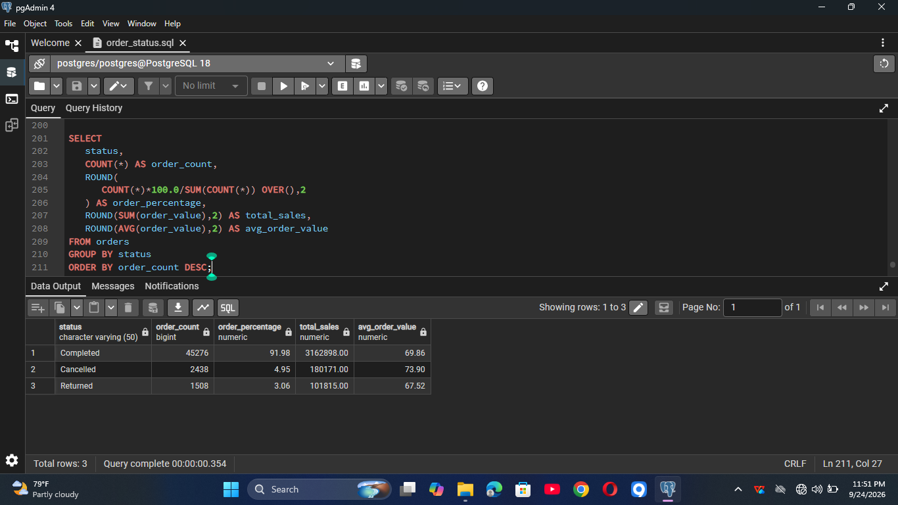
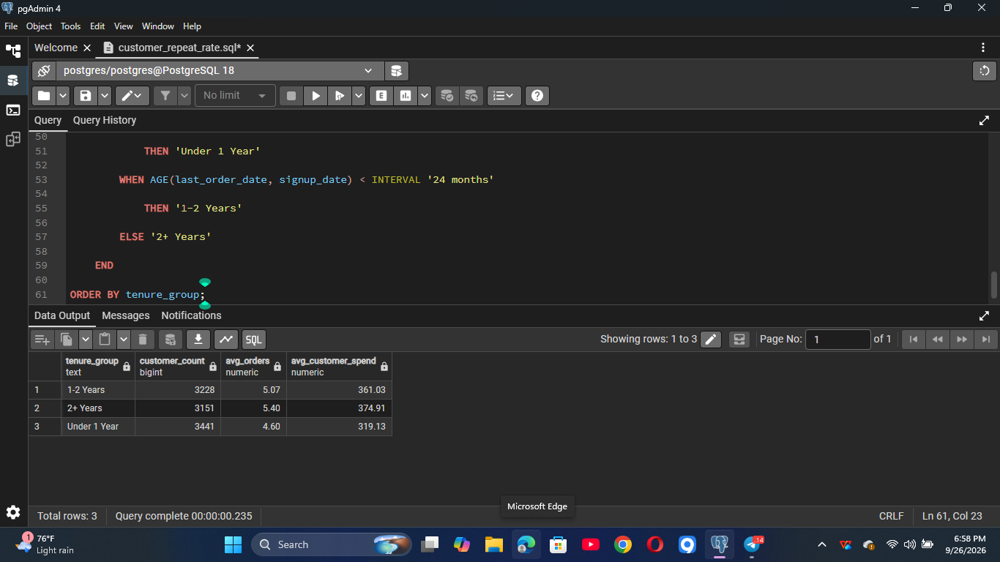
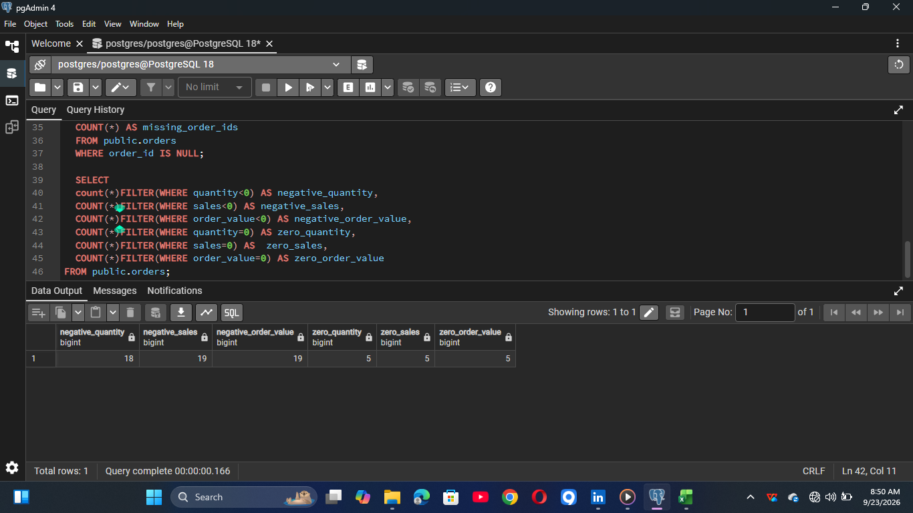
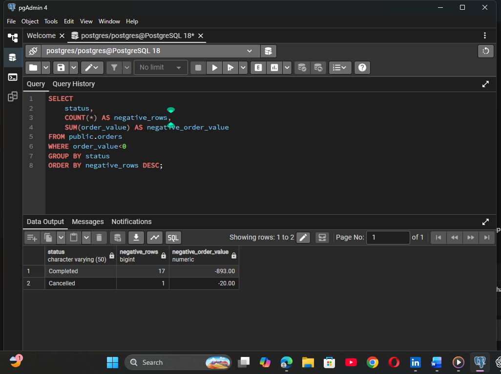
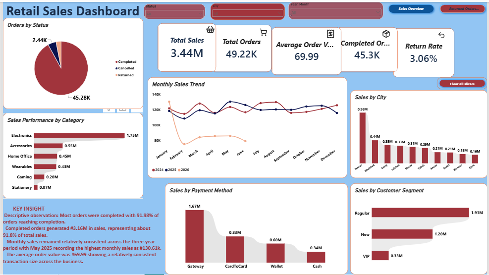
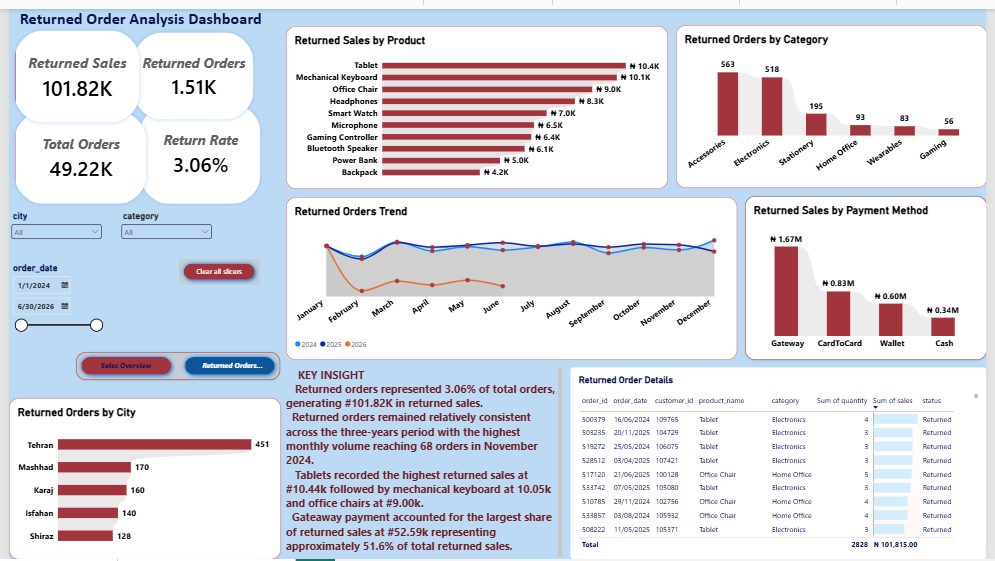

Project Overview
This end-to-end retail analytics project explores 49,222 transaction records to understand sales performance,
customer spending patterns, order outcomes and product returns.
I used PostgreSQL to validate the dataset and investigate business questions,
then used Power Query and Power BI to prepare the data, develop analytical measures
and build interactive dashboards.
The project demonstrates my approach to data quality, exploratory analysis,
KPI reporting and communicating findings that can support business decisions.
Key Metrics
49.22K
Total Orders
₦3.44M
Total Sales
₦69.99
Average Order Value
3.06%
Return Rate
Business Questions
- How much sales revenue was generated?
- How many orders were completed, cancelled or returned?
- How did sales change over time?
- Which product categories and cities generated the most sales?
- Which payment methods contributed most to sales?
- What products and locations were associated with returned orders?
- How much sales value was associated with returned orders?
Data Preparation & Validation
- Validated 49,222 transaction records and confirmed that all Order IDs were present and unique.
- Checked for duplicate records, missing values and potential data-quality issues.
- Identified 18 transactions with negative quantities and 19 transactions with negative sales and negative order values.
- Investigated transactions with zero values and negative values rather than removing them without understanding their context.
- Compared transaction statuses and examined unusual records, including negative-sales transactions marked as Completed.
PostgreSQL Analysis
I used PostgreSQL to validate the retail transaction dataset and
investigate business questions before building the Power BI
dashboards. The analysis focused on order performance, customer
spending patterns, data quality, and category-level issues.
- Sales and order performance by status.
- Sales performance across years and time periods.
- Customer spending and repeat-customer analysis.
- Category and city performance.
- Payment-method analysis.
- Returned-order analysis.
Order Status Performance
I analyzed order performance by status to compare completed,
cancelled and returned orders including their contribution
to total sales and their percentage of total orders.

Customer Tenure & Spending
I analyzed customer tenure to understand how customer longevity
relates to order frequency and average customer spending.
Longer-tenured customers showed higher average order activity
and spending.

Data Quality Investigation
I investigated unusual transaction values to identify potential
data-quality issues before analysis. The review found negative
and zero-value transactions, which were examined rather than
removed without investigation.
- 18 transactions with negative quantity
- 19 transactions with negative sales
- 19 transactions with negative order value
- 5 transactions with zero quantity, sales, and order value
Further investigation showed that the negative-sales transactions
included records with a Completed status, highlighting the
importance of validating unusual values before making business
decisions.

Category Issue Rate
I compared order outcomes across product categories to identify
categories with higher levels of cancelled and returned orders.
This helped highlight areas where product or order issues may
require further investigation.

Power BI Dashboard
The Power BI report contains two analytical pages:
- Sales Overview — overall sales, orders, trends, categories, cities, payment methods, and customer segments.
- Returned Orders Analysis — return rate, returned sales, return trends, cities, categories, products, payment methods, and order-level details.
Interactive slicers allow users to explore the data by city,
category, order status, and date.
Sales Overview

Returned Orders Analysis

Key Findings
-
Order completion:
Completed orders represented 91.98% of all orders,
generating approximately ₦3.16 million in sales.
-
Returns:
Returned orders accounted for 3.06% of total orders,
with returned sales of approximately ₦101,815.
-
Product returns:
Tablets recorded the highest returned sales among the
highlighted products at approximately ₦10,439, followed by
mechanical keyboards at ₦10,053.
-
Payment methods:
Gateway payments accounted for approximately ₦52,591
in returned sales, making them the largest contributor
among the payment methods analyzed.
-
Data quality:
Negative and zero transaction values required investigation
before interpreting the results. This reinforced the importance
of validating unusual records before making business decisions.
```html
Business Recommendations
-
Investigate unusual transactions:
Review negative and zero-value transactions, particularly
records marked as Completed, to confirm whether they
represent legitimate adjustments or require correction.
-
Monitor product returns:
Investigate the reasons for returns involving tablets,
mechanical keyboards and office chairs before deciding
whether product descriptions, quality checks or customer
support processes need improvement.
-
Review payment-related returns:
Examine gateway payment transactions associated with returns
to determine whether the high returned-sales value reflects
payment volume, transaction value or a specific issue.
-
Track order outcomes:
Monitor completion, cancellation and return rates over time
to identify meaningful changes and support operational
improvements.
These recommendations are proposed next steps based on the
observed patterns. Further investigation would be needed before
attributing causes or implementing changes.
```
Tools
PostgreSQL
Power BI
Power Query
DAX
← Back to Portfolio